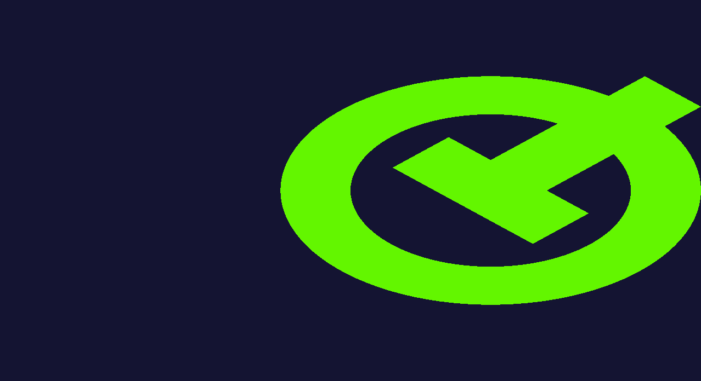

QOpenGLWidget Stereoscopic Rendering Example
This example shows how to create a minimal QOpenGLWidget based application with stereoscopic rendering support.
Note: Support for stereoscopic rendering has certain hardware requirements, such as, a graphics card with stereo support, 3D glasses and specific monitors.
Note: This example renders two images to two separate buffers. When you view the images through 3D glasses, they give a 3D holographic effect.
The above image is what will be rendered to the left buffer.

The above image is what will be rendered to the right buffer.
Setting the correct surface flag
To enable stereoscopic rendering you need to set the flag QSurfaceFormat::StereoBuffers globally. Just doing it on the widget is not enough because of how the flag is handled internally. The safest is to do it on QSurfaceFormat::SetDefaultFormat prior to starting the application.
QSurfaceFormat format; format.setDepthBufferSize(24); format.setStencilBufferSize(8); // Enable stereoscopic rendering support format.setStereo(true); QSurfaceFormat::setDefaultFormat(format);
Rendering twice
After QSurfaceFormat::StereoBuffers is set, then paintGL() will be called twice, once for each buffer. In paintGL() you can call currentTargetBuffer() to query which TargetBuffer is currently active.
In the following snippet we slightly translate the matrix to not render the vertices on top of each other. This is a simple example just too see that if the necessary support is there, at runtime you should see two objects, one on the left and one on the right.
// Slightly translate the model, so that there's a visible difference in each buffer. QMatrix4x4 modelview; if (currentTargetBuffer() == QOpenGLWidget::LeftBuffer) modelview.translate(-0.4f, 0.0f, 0.0f); else if (currentTargetBuffer() == QOpenGLWidget::RightBuffer) modelview.translate(0.4f, 0.0f, 0.0f);